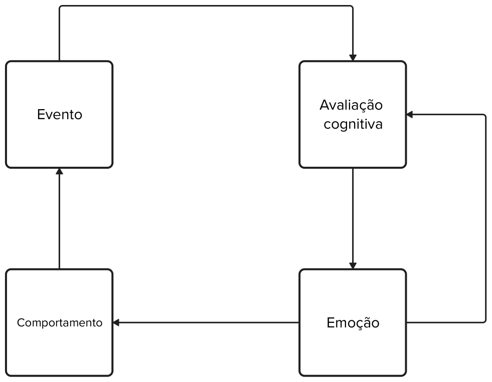

Psicologia cognitiva e terapias cognitivas
Visão geral e a terapia cognitiva de Beck
Objetivos da aula
- Traçar um breve histórico da psicologia cognitiva e das terapias cognitivas.
- Apresentar conceitos básicos das terapias cognitivas: tríade cognitiva, modelo cognitivo.
- Apresentar o modelo de terapia cognitiva de Aaron Beck e alguns de seus componentes: conceitualização, níveis de cognição, princícipios do tratamento, estrutura de sessão.
Contexto histórico
- Na década de 1960, teorias psicanalíticas dominavam a psicologia clínica e a psiquiatria.
- Ao mesmo tempo, a pesquisa acadêmica em psicologia era dominada pelo paradigma behaviorista.
Contexto histórico
“O poder, as honras, a autoridade, os livros, os lucros, tudo relacionado à psicologia estava nas mãos da escola behaviorista [...] aqueles que desejassem ser psicólogos científicos não podiam opor-se ao behaviorismo. Senão, ficariam desempregados.”
Contexto histórico
- A partir dos anos 1960/1970 cresceu o questionamento sobre a eficácia da psicanálise no tratamento de transtornos mentais.
- Observa-se também, dentro comunidade acadêmica, uma flexibilização das diretrizes do manifesto behaviorista.
- Disseminação da analogia do computador.
Desenvolvimentos iniciais
- George Miller (1956) - O Mágico Número Sete.
- Ulric Neisser (1967) - Psicologia Cognitiva.
- Albert Ellis (1962) - Terapia Racional Emotiva Comportamental.
- Aaron Beck (1979) - Terapia Cognitiva da Depressão.
Aaron Beck: trajetória da pesquisa
- Psicanalista e professor na Universidade da Filadélfia.
- Estudos sobre depressão e conteúdos dos sonhos.
- Conclusão: padrões cognitivos explicariam o viés negativo sobre si, o ambiente e o futuro (tríade cognitiva).
Aaron Beck: trajetória da pesquisa
- Apontar distorções cognitivas negativas produz melhora no humor e no comportamento de pacientes deprimidos.
- Resultaods das pesquisas são sistematizados em Terapia Cognitiva da Depressão em 1979.
Modelo cognitivo - antecedentes filosóficos
- Estoicismo enfatiza que emoções têm base no pensamento e na mente em constante atividade.
- Epicteto (século I d.C.): “O que perturba o ser humano não são os fatos, mas a interpretação que ele faz destes.”
Modelo cognitivo - princípios básicos
- Mais que os fatos, a forma como o indivíduo os interpreta influencia como se sente e se comporta.
- O sofrimento psicológico envolve distorções de conteúdo típicas da patologia e "vícios" na interpretação dos fatos.
Modelo cognitivo - princípios básicos
- A atividade cognitiva influencia o comportamento.
- A atividade cognitiva pode ser monitorada e alterada.
- Mudanças na cognição determinam mudanças no comportamento.
Modelo cognitivo

Terapia cognitiva de Beck
- Psicoterapia focal baseada no modelo cognitivo.
- Modificar pensamentos disfuncionais leva à melhora sintomática.
- A revisão de crenças disfuncionais subjacentes leva a ganhos mais abrangentes e duradouros.
Os três níveis de cognição
A terapia cognitiva de Beck se concentra na identificação e modificação de cognições em três níveis:
- Pensamentos automáticos
- Crenças intermediárias
- Crenças nucleares
Os três níveis de cognição
Pensamentos automáticos
Superficiais, espontâneos, telegráficos, repetitivos, pouco questionados; forte emoção negativa; mais fáceis de identificar.
Os três níveis de cognição
Crenças intermediárias
Regras e pressupostos que permitem conviver com ideias absolutas e não adaptativas; funcionam como mecanismo de sobrevivência frente às crenças nucleares.
Os três níveis de cognição
Crenças nucleares
Mais profundas, ligadas à infância, absolutas e rígidas sobre o si; interação entre predisposição genética, hipersensibilidade a rejeição/abandono e ambiente.
Conceitualização cognitiva
- É o mapa que organiza o tratamento.
- Permite foco compartilhado entre paciente e terapeuta e compreensão de como o paciente se estruturou para sobreviver e se proteger.
Conceitualização cognitiva
Elementos fundamentais
- Dados relevantes da história do paciente.
- Pensamentos automáticos, sentimentos e condutas em situações cotidianas.
- Crenças intermediárias e nucleares.
- Estratégias compensatórias.
- Diagnóstico clínico.
Características do tratamento
- Abordagem estruturada, diretiva e colaborativa.
- Relação terapêutica sólida é fundamental.
- Forte componente educacional.
- Foco no aqui e agora.
Estrutura típica da sessão
- Verificação do humor - escalas como BDI.
- Estabelecimento da agenda; revisão da tarefa da sessão anterior; priorização dos temas do dia.
- Discussão dos itens da agenda.
- Tarefa de casa.
- Verificação do humor.
- Feedback do paciente.
Exercício
Carla, 34 anos, relata ansiedade intensa em consultas odontológicas e, há cerca de oito anos, evita consultas de rotina. Na infância, passou por uma extração vivida com muito medo e sensação de perda de controle na cadeira; já adulta, lembra-se com constrangimento de um comentário desajeitado de um dentista sobre higiene. Desde então costuma cancelar consultas em cima da hora e adiar novas marcações. Foi encaminhada ao serviço de saúde mental depois de chorar na recepção ao tentar agendar uma restauração, e, desde que recebeu o lembrete da próxima consulta, dorme mal, sente taquicardia e pensa em desmarcar de novo. Afirma que vai “doer horrores”, que vai “passar vergonha” e que “os dentistas acham que a gente é porca”; teme desmaiar ou gritar no consultório e conclui: “sempre fui fraca para essas coisas.”